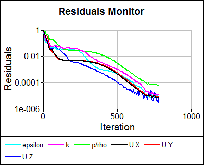

Cyclone Separator
Cyclone separators are used in many industries to separate particles from a fluid, where the fluid is usually air or water. The types of particles vary widely, from wood chips to dust. You can find cyclones in a variety of places and industries.
A variety of cyclones can be found in a typical integrated paper mill, where they are used to:
- Extract solid contaminants from waste water
- Separate waste paper from air during the final trimming process
There is also a good chance that you own a cyclone thanks to the pioneering effort of Dyson in using multiple cyclones in their bag-less vacuum cleaners.
A cyclone consists of a conical region and a tangential inlet that feeds the fluid and particles into the cyclone. The fluid and particles rotate to form a vortex that is confined by the walls of the cyclone. Particles are flung into the relatively slow moving fluid conforming to the outer walls of the cyclone due to the centrifugal forces, and then they fall under gravity to the particle exit at the bottom of the device. The fluid then accelerates as it leaves the cyclone via the outlet at the top of the device.
As an example of our RANS Flow Computational Fluid Dynamics (CFD) capabilities we simulated the airflow in a generic cyclone by creating the geometry, specifying the physics, running the simulation, and visualizing the results using Caedium Professional.
Geometry
The geometry (a volume representing the airflow path) of a generic cyclone was created using simple primitive shapes (e.g., box, cylinder, frustrum) and Boolean operations (e.g., unite, subtract) available in Caedium.
Physics
The default air properties (i.e., turbulent, steady, incompressible flow) in Caedium were used to specify the material properties and solver technique to be used for the cyclone simulation. The reference velocity for the simulation was set equal to the inlet velocity of 10m/s and the initial velocity was set to zero.
The majority of the faces in the cyclone were set to walls (i.e., impenetrable to a fluid), with the exception of setting:
- An inlet on the rectangular face on the inlet duct (blue face shown above)
- An outlet on the circular face at the top of the cyclone (red face shown above)
Results
Three views of the simulation were created to display results:
- Particles colored by velocity magnitude
- Velocity vectors (arrows) on the cyclone faces colored by velocity magnitude
- Velocity magnitude color map (or iso-surfaces)
Also a residuals monitor was created to provide solver telemetry (convergence history).
The simulation was run until the results no longer changed significantly and the residuals had dropped four orders of magnitude with little further reduction evident with more iterations. The results and residual history are shown below.
Caedium interpolates velocity onto boundaries from the velocity volume field and therefore the results do not show the no-slip (zero velocity) wall condition.

Conclusion
The results show the relatively slow air near the walls of the cylindrical and conical regions in the cyclone, which will cause particles to drop into the bottom of the cyclone. Also note the relatively fast air that exits up the central core. Both of these flow features are typical of cyclones.
Try For Yourself
The sym project file for this study can be viewed in Caedium or you can investigate this case yourself using our RANS Flow add-on.
The most convenient way to view and edit this case is to use our Professional add-on that combines all the add-ons used during this example.
Feedback
Questions? Ideas? Problems?